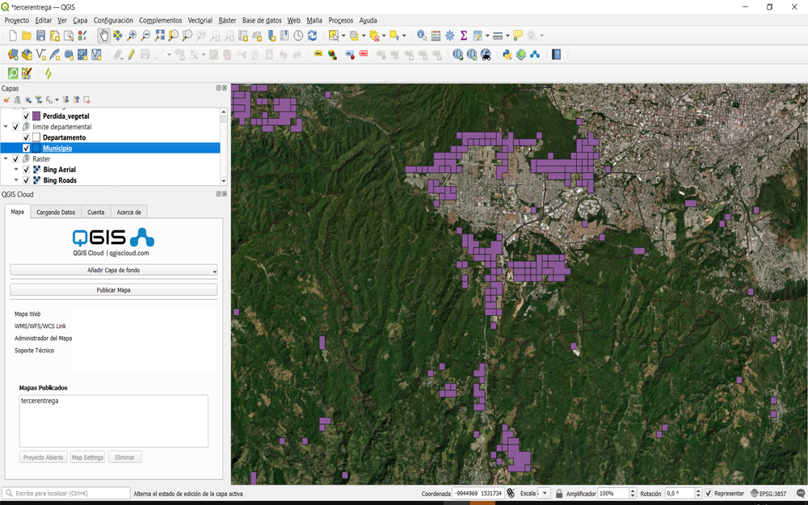

A continuación se muestra un mapa en el cual se dan a conocer los lugares y fechas de deforestación en El Salvador. Al hacer clic en el mapa en un objeto del mapa se muestra dicha información, la cual puede ser consultada en cualquier sitio del mapa con un clic. El mapa se ha generado gracias a la herramienta QGIS y su complemento QGIS Cloud, lo cual ha facilitado contener el mapa con información geoespacial.
Al activar y desactivar diferentes capas, podemos identificar diversos factores que influyen en la pérdida de vegetación en varias regiones del país. Algunas de las causas incluyen la proximidad a zonas de cultivo, la expansión de áreas residenciales y la facilidad de acceso para la extracción de recursos vegetales destinados a la industria.
En la era actual, la tecnología de los Sistemas de Información Geográfica (SIG) se ha convertido en una herramienta invaluable para la recopilación, análisis y visualización de datos geoespaciales. Estos sistemas nos permiten comprender y explorar la relación entre diferentes fenómenos geográficos y variables, brindando información crucial para la toma de decisiones y la implementación de estrategias efectivas. En el contexto de El Salvador, un país conocido por su rica biodiversidad y su importante cobertura vegetal, la pérdida de vegetación se ha convertido en una preocupación creciente. Con el objetivo de comprender mejor este fenómeno y generar conocimientos para su conservación, se llevó a cabo un proyecto de Sistema de Información Geográfica utilizando la herramienta QGIS. El proyecto se centró en recopilar información sobre la pérdida de vegetación en El Salvador, aprovechando las capacidades de QGIS para la elaboración de mapas y la integración de diversas capas de datos geográficos. Para ello, se utilizaron diferentes fuentes de información, incluyendo datos satelitales y datos geográficos vectoriales. La información geoespacial obtenida permitió crear un mapa detallado que representa los límites de los departamentos y municipios de El Salvador, proporcionando una estructura geográfica precisa para el análisis de la pérdida de vegetación. Además, se agregó una capa raster satelital para obtener una referencia más actualizada sobre el estado de la vegetación en el país. La capa de pérdida vegetal, representada como datos geográficos vectoriales en formato shape, se superpuso en el mapa, lo que permitió identificar las áreas donde se ha producido una disminución significativa en la cobertura vegetal. Esta capa proporciona información cuantitativa y espacial sobre los cambios en la vegetación, lo que resulta fundamental para comprender las causas y consecuencias de la pérdida de vegetación en El Salvador.
Aca un ejemplo de como se ve el proyecto en elentorno de Qgis.
| Carnet | Apellidos | Nombres |
| BU03002 | BARRIOS URIAS | FRANCISCO ANTONIO |
| JL09002 | JIMENEZ LARA | OSCAR DANIEL |
| MC09084 | MENDOZA CARRANZA | ARMANDO ENRRIQUE |